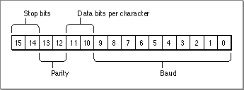

Legacy Document
Important: The information in this document is obsolete and should not be used for new development.
Important: The information in this document is obsolete and should not be used for new development.


SerReset
You can use theSerResetfunction to reset the serial port drivers and configure the port for a specified transmission rate and character frame.
FUNCTION SerReset (refNum: Integer; serConfig: Integer): OSErr;
refNum- The driver reference number of the serial output driver.
serConfig- A 16-bit value that specifies the configuration information.
DESCRIPTION
TheSerResetfunction resets the output and input device drivers for the serial port, and also configures the port according to the format of theserConfigparameter shown in Figure 7-3.Figure 7-3 The
serConfigparameter format[Missing image]
You can use the following constants to set the values of the bit fields in the
serConfigparameter:
CONST baud300 = 380; {300 baud} baud600 = 189; {600 baud} baud1200 = 94; {1200 baud} baud1800 = 62; {1800 baud} baud2400 = 46; {2400 baud} baud3600 = 30; {3600 baud} baud4800 = 22; {4800 baud} baud7200 = 14; {9600 baud} baud9600 = 10; {3600 baud} baud14400 = 6; {14400 baud} baud19200 = 4; {19200 baud} baud28800 = 2; {28800 baud} baud38400 = 1; {38400 baud} baud57600 = 0; {57600 baud} stop10 = 16384; {1 stop bit} stop15 = -32768; {1.5 stop bits} stop20 = -16384; {2 stop bits} noParity = 0; {no parity} oddParity = 4096; {odd parity} evenParity = 12288; {even parity} data5 = 0; {5 data bits} data6 = 2048; {6 data bits} data7 = 1024; {7 data bits} data8 = 3072; {8 data bits}For example, the default setting of 9600 baud, eight data bits, two stop bits, and no parity bit is equivalent to passing the following value in theserConfigparameter:
baud9600 + data8 + stop20 + noParity.This value has a binary representation of1100110000001010and a hexadecimal representation of$CC0A.ASSEMBLY-LANGUAGE INFORMATION
TheSerResetfunction is equivalent to a Device Manager control request with acsCodevalue of 8. You pass theserConfigparameter in thecsParamfield (csParam[0]=serConfig).RESULT CODES
noErr 0 No error